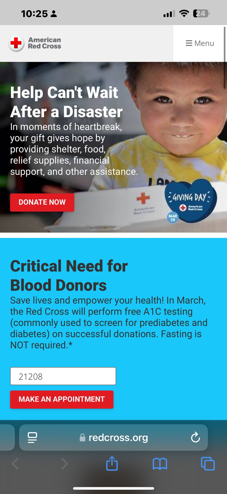

Website Name: American Red Cross
Website URL: https://www.redcross.org/
Target Audience: Individuals seeking disaster relief, blood donations, training courses, and volunteer opportunities.
The site is structured with a clear navigation bar at the top, featuring categories such as "Get Help," "Give Blood," and "Volunteer." The homepage highlights urgent calls to action, upcoming events, and donation options.
Audit Score: [Add the score from the Accessibility Checker]
Effectiveness: The website effectively supports users by providing clear donation and emergency assistance options.
Efficiency: Users can quickly find key actions such as scheduling blood donations or seeking disaster relief.
Engagement: The design is visually appealing, easy to navigate, and appropriate for a humanitarian organization.
Consider improving the accessibility of certain text elements by ensuring higher contrast ratios for readability.